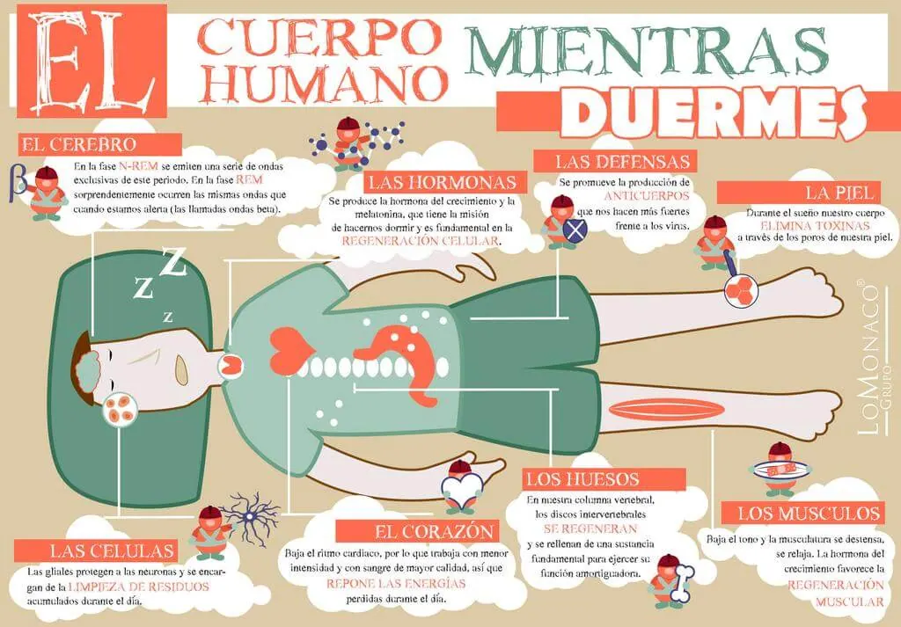

El cuerpo humano mientras duermes

LAS CÉLULAS
Las células gliales protegen a las neuronas y se encargan de la LIMPIEZA DE RESIDUOS de nuestro cuerpo mientras dormimos ya que estos se acumulan durante el día.
LAS HORMONAS
Mientras duermes, se produce la hormona del crecimiento y la melatonina, que tiene la misión de hacernos dormir y es fundamental en la REGENERACIÓN CELULAR de nuestro cuerpo.
EL CORAZÓN
Baja el ritmo cardiaco, por lo que el cuerpo trabaja con menor intensidad y con sangre de mayor calidad, así que REPONE LAS ENERGÍAS que nuestro cuerpo ha perdido durante el día.
LAS DEFENSAS
Se promueve la producción de ANTICUERPOS en nuestro cuerpo que nos hacen más fuertes frente a los virus.
LOS HUESOS
En nuestra columna vertebral, los discos intervertebrales SE REGENERAN y se rellenan de una sustancia fundamental para ejercer su función amortiguadora en nuestro cuerpo.
LA PIEL
Durante el sueño nuestro cuerpo ELIMINA TOXINAS a través de los poros de nuestra piel.
LOS MÚSCULOS
Baja el tono y la musculatura de todo nuestro cuerpo se destensa, se relaja. La hormona del crecimiento favorece la REGENERACIÓN MUSCULAR.